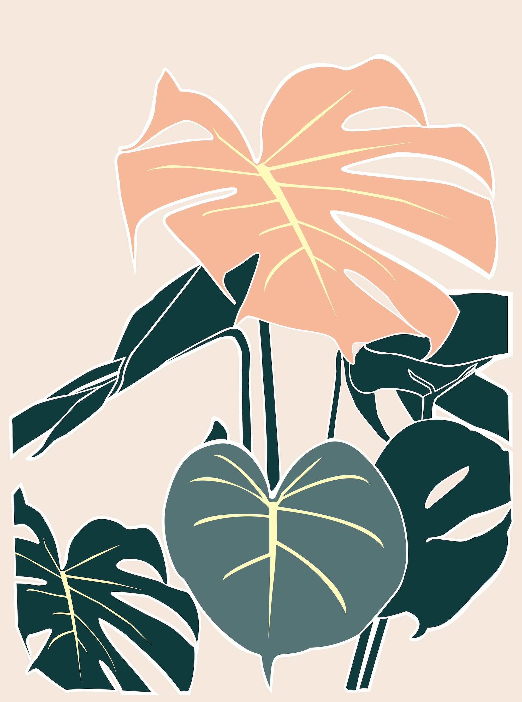

How to care for a Monstera plant
Monsteras are unique, easygoing houseplants whose dramatic leaves are adorned with dramatic hole formations. Monsteras are vining plants and love to trail over the pot or climb along a stake or trellis.
They love bright, indirect light, but will be happy under fluorescent lights as well. Monsteras are climbers, so as they grow, they will want to vine out. These impressive plants are also tolerant of the occasional missed watering, making them ideal for inexperienced plant parents.
FUN FACT
Monstera plants are known for their distinctive leaf patterns. The slits and holes in Monstera leaves are called fenestrations.

LIGHT
Your Monstera can grow just about anywhere in your home! It tolerates low light, but grows faster and becomes more dramatic in a spot with indirect bright light. That said, avoid strong, direct sunlight because it may burn the leaves.
Water
Water your Monstera when the top 50-75% of the soil is dry. Water until liquid flows through the drainage hole at the bottom of the pot and discard any water that has accumulated in the saucer.
HUMIDITY
This plant will thrive in almost any environment, but if you want to give it a special treat, gently mist it once a week. It’s best to mist your Monstera in the morning so the water has plenty of time to evaporate before evening.
TEMPERATURE
Normal room temperatures between 60-80 degrees are great for your Monstera. It will not tolerate temperatures under 55 degrees or sudden drops in temperature. Avoid cold drafts and direct airflow from heaters in the winter months.
FOOD
For best results, feed your plant once a month throughout the spring and summer. A little bit of food will go a long way to encourage growth and root health. No fertilizer is necessary during the winter—it’s important to give your Monstera a chance to rest during the cooler time of year.
TOXICITY
Monstera leaves are mildly toxic to pets and humans. Typically, ingestion will cause mouth and stomach irritation and possible vomiting.
ADDITIONAL CARE
Large leaves can collect dust. If you notice the leaves are dirty or dusty, wipe the leaves with a damp cloth and gently dry to keep them clean and healthy. In the wild, Monstera plants like to climb. To encourage your Monstera to climb upwards, you can stake wild offshoots with a dowel or use a moss pole.